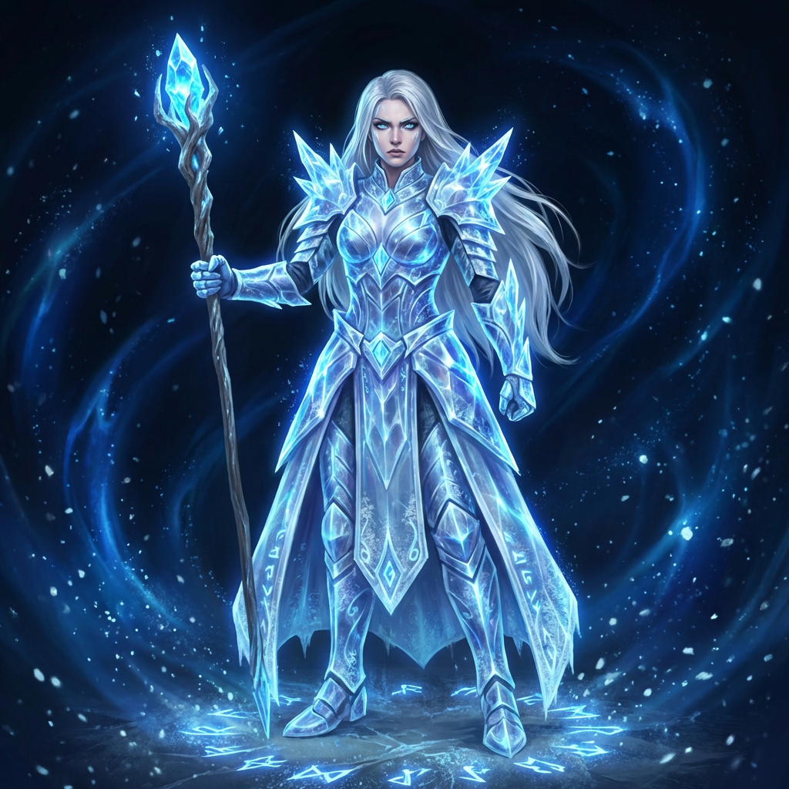

数千年后，封印松动，世界树尤克特拉希尔在感知到自身根系腐朽后，激活了第十魂令。而在凡界，九位英雄的后裔——那些继承了先祖魂能血脉的领主们——开始感受到世界树的召唤。
为什么是这三位英雄首先加入主角阵营？
金耀大陆的奥雷利乌斯，代表着秩序与荣耀的坚守；霜寒大陆的凯莉丝，守护着冰封的真相；炎狱大陆的沃卡努斯，燃烧着反抗的火焰。他们所在的大陆是封印松动最先波及的地区，他们的命运与封魂令的碎片紧密相连。更重要的是，他们各自掌握着关于深渊、神殿和世界树真相的关键碎片——只有当他们汇聚在一起，完整的图景才会浮现。
📋 英雄档案
- 姓名：奥雷利乌斯·铁心（Aurelius Ironheart）
- 称号：黄金骑士团末代指挥官
- 元素：金 · Gold
- 大陆：金耀大陆（奥瑞姆）
- 外貌：金色全板甲，狮冠头盔，布满战痕的坚毅面庞
- 角色定位：先锋 · 团队的精神支柱
🎭 性格特征
刚正不阿，荣誉至上，沉默寡言但言出必行。奥雷利乌斯是一位典型的骑士，他将骑士道精神视为生命的准则。在深渊侵蚀战友、骑士团分裂的至暗时刻，他选择了坚守而非同流合污。他的沉默不是冷漠，而是历经沧桑后的内敛——每一个字都经过深思熟虑，每一个承诺都重如千钧。
⚔️ 能力设定
- 战斗风格：重甲防御型战士，以巨剑和塔盾为主要武器
- 核心技能：「黄金壁垒」——以魂能构筑不可逾越的防御屏障；「狮心冲锋」——带领盟友发起无畏的冲锋
- 力量来源：金之封魂令的共鸣，以及黄金骑士团代代相传的魂能修炼法门
📖 背景故事
【第一幕：黄金誓约】
金耀大陆的天空永远悬挂着一轮炽白的太阳，阳光洒在奥瑞姆王都的尖塔上，折射出如同液态黄金般的光芒。这里是九封魂令中"金之令"的守护地，也是魂能最为坚硬的所在。
奥雷利乌斯·铁心站在骑士殿的最高露台上，金色的全板甲在阳光下熠熠生辉，狮冠头盔下的双眼凝视着远方贯穿天地的世界树树干——通天之柱。作为黄金骑士团的末代指挥官，他深知肩上的重量。魂能的流动近年来愈发滞涩，世界树尤克特拉希尔的枯萎迹象已在金耀大陆显现，金属矿脉失去光泽，骑士们的武器时常无故断裂。
"指挥官，圣心城的援兵不会再来了。"副官瓦莱里乌斯的声音在身后响起，带着压抑的愤怒，"众神躲在树冠的上界，早已遗忘了凡界的苦难。"
奥雷利乌斯转过身，面甲下的表情冷峻如铁。"封魂令松动，湮灭魔族的低语已渗入地底。我去圣心城，不是为了乞求神的怜悯，而是为了确认九封魂令的现状。"他握住腰间的巨剑，剑柄上的纹路与世界树的根系共鸣，"若神弃我们，黄金骑士团便是最后的屏障。"
【第二幕：堕落之影】
当奥雷利乌斯返回金耀大陆时，空气中弥漫着硫磺与腐铁的味道。曾经辉煌的骑士团要塞如今死寂无声。他推开骑士殿厚重的大门，眼前的景象让这位身经百战的指挥官感到心脏骤停。
大厅中央，数十名黄金骑士围成一圈，他们的盔甲不再闪耀金光，而是覆盖着紫黑色的粘稠物质——那是湮灭魔族侵蚀后的痕迹。深渊能量扭曲了他们的灵魂，将守护者的魂能转化为吞噬的欲望。
"欢迎回家，指挥官。"瓦莱里乌斯从阴影中走出。他的半边脸已被深渊侵蚀，左眼燃烧着诡异的紫色火焰，"众神没有回应你，就像他们没有回应我们。湮灭使徒承诺了力量，真正的、触手可及的力量。"
"那是谎言。"奥雷利乌斯的声音低沉，却如钢铁撞击般清晰，"魂能是生命之源，不是掠夺的工具。"
那场战斗没有欢呼，只有金属撕裂血肉的声音。奥雷利乌斯不得不亲手斩断昔日战友的咽喉。当瓦莱里乌斯倒在他脚下时，深渊的能量试图涌入奥雷利乌斯的盔甲，却被他意志中纯粹的"金"之元素硬生生排斥。他站在堆积如山的尸体中央，心中却比任何时候都要冰冷。他明白了，旧的秩序已无法修补，等待众神的救赎无异于慢性自杀。
【第三幕：新枝萌芽】
奥瑞姆王都的解放战持续了三天三夜。当最后一波深渊生物被清除后，奥雷利乌斯独自坐在骑士殿前的台阶上，擦拭着巨剑上的污血。此时，世界树的使者——玩家，走了过来。
使者身上流淌着不同于凡界的力量，那是直接源自世界树本源的魂能，纯净而充满生机。手中的节点碎片散发着柔和的光芒，与奥雷利乌斯盔甲上的金之令产生了共鸣。
"湮灭魔族不会停止，"使者告诉他，"唯有唤醒沉睡的世界树，重建三界的连接，才能从根本上封印深渊。"
奥雷利乌斯站起身，金色的盔甲在节点光芒的照耀下重新焕发出神圣的光泽。他意识到，自己坚守一生的荣誉，不应是固守腐朽的旧誓，而是守护新的希望。众神已逝，凡界需自强，而使者是那个能带领他们走出黑暗的人。
他缓缓走到使者面前，卸下了头盔，露出布满伤疤却坚毅无比的面庞。他单膝跪地，将巨剑竖立在身前，右手抚胸，行了一个古老的骑士礼。
"黄金骑士团已死，但奥雷利乌斯·铁心仍在。"他的声音沉稳而有力，如同金耀大陆永不崩塌的山脉，"既然您能唤醒世界树，那么我的剑与魂能，皆归于您麾下。以金之令的名义，我誓将成为您最坚固的盾，直至魂域重归完整。"
🔗 与世界观关联
奥雷利乌斯代表着凡界对秩序与荣耀的坚守。他的故事揭示了深渊侵蚀的残酷性——即使是最崇高的骑士团也无法免疫。他手中的金之封魂令碎片是修复封印的关键，而他与堕落副官瓦莱里乌斯的对决，象征着旧秩序在新时代的撕裂与重生。
加入条件：解放奥瑞姆王都后，在骑士殿前向玩家单膝跪地，以骑士誓言效忠。

📋 英雄档案
- 姓名：凯莉丝·霜生（Kaelith Frostborn）
- 称号：尼弗海姆冰晶王座流亡公主
- 元素：冰 · Ice
- 大陆：霜寒大陆（尼弗海姆）
- 外貌：水晶冰甲折射着幽蓝光芒，银白长发，瞳孔如冻湖
- 角色定位：叛逆者 · 隐藏着最多秘密的英雄
🎭 性格特征
外表冷若冰霜，内心燃烧着复仇与保护的烈火。凯莉丝的冷漠是一种自我保护——她知道的太多，而能够倾诉的太少。她的沉默不是无话可说，而是必须将真相冰封在心底。在冰甲之下，是一颗渴望正义、渴望救赎的心。她对兄长的背叛感到痛苦，但更多的是对自己无力阻止的自责。
❄️ 能力设定
- 战斗风格：冰霜魔法与剑术双修，以速度和精准见长
- 核心技能：「霜冻领域」——减缓敌人行动并造成持续冰冻伤害；「冰晶穿刺」——召唤冰锥从地下突袭敌人
- 力量来源：冰之封魂令的共鸣，以及尼弗海姆王室代代相传的冰霜魂能血脉
📖 背景故事
【第一幕：冰晶王座的寒霜】
霜寒大陆极北之地，尼弗海姆的寒风从未停歇。这里是世界树尤克特拉希尔根系最浅的触须所触及之处，魂能在此凝结为永恒的冰晶。凯莉丝·霜生出生于冰晶王座之上，她的银白长发并非染色，而是出生时便汲取了过溢的纯净魂能，化作霜雪之色。
作为公主，凯莉丝自幼便被教导：冰不仅是寒冷，它是秩序的凝固。她的父亲，老国王，常指着王座下深邃的冰层告诫她："看透了冰，才能看透魂域的真相。"然而，凯莉丝透过的冰层看到的并非真相，而是深渊。
在她成年礼的前夜，她站在王座厅的露台上，瞳孔如冻湖般映照着极光。兄长瓦勒里斯走到她身后，披风上绣着霜狼的纹章。"妹妹，"瓦勒里斯的声音温柔却带着一丝不易察觉的颤抖，"众神在上界沉睡，凡族在中域挣扎，你觉得我们守着的这冰层之下，真的只有岩石吗？"
凯莉丝转身，冰甲发出清脆的碰撞声。"那是祖先的封印，兄长。不要凝视深渊，除非你想被它吞噬。"
瓦勒里斯笑了，那笑容里没有了往日的温度："可深渊也在凝视我们。它许诺了力量，足以让尼弗海姆不再需要乞求世界树残羹的力量。"那一刻，凯莉丝在他眼中看到了不属于凡族的幽暗——那是湮灭魔族腐蚀的痕迹。她明白了，王座之下的冰层并非基石，而是牢笼。而她的兄长，正试图打开牢笼的门。
【第二幕：深渊的低语与流亡】
政变发生在冬至之夜，魂能流动最为滞涩的时刻。瓦勒里斯启动了隐藏在王座地底的古老法阵，冰层发出痛苦的呻吟，裂缝中透出深渊的紫黑色雾气。湮灭魔族的低语如同无数虫豸在脑海中啃噬，那是关于毁灭与重生的虚假福音。
凯莉丝拔剑相向，冰霜魔力在她剑刃上凝聚。"你疯了，瓦勒里斯！一旦封印破碎，虚无之潮会吞没霜寒大陆！"
"那就让它吞没！"瓦勒里斯狂笑着，手中握着一枚散发着诡异红光的碎片——那是九封魂令中属于冰元素的核心碎片，被历代国王秘密守护，如今却成了毁灭的钥匙，"旧秩序已死，唯有拥抱深渊，我们才能成为新世界的主宰！"
战斗激烈而短暂。凯莉丝并非不敌，但她无法在攻击兄长的同时修补即将崩溃的冰层封印。她感受到脚下大地的震动，深渊裂隙正在扩大，一旦完全开启，整个霜寒大陆将沦为湮灭魔族的牧场。
在一个瞬间的抉择中，凯莉丝做出了痛苦的决断。她挥剑击碎了王座厅的支柱，引发雪崩将自己与瓦勒里斯隔绝开来。"我会回来，"她对着崩塌的冰隙低语，声音冷冽如刀，"但不是作为妹妹，而是作为行刑者。"
她选择了流亡。并非因为恐惧，而是因为她知道一个更可怕的秘密：王座之下隐藏着通往深渊的最大裂隙。若她此时揭穿瓦勒里斯，恐慌会导致魂能紊乱，加速封印破裂。她必须沉默，必须隐忍，直到找到能真正修复封印的力量。
【第三幕：封魂令与使者的盟约】
命运的转折始于世界树节点的使者——玩家，出现在她的流亡之路。使者并未像其他势力那样索取力量，而是展示了修复魂能循环的技艺。在他们的联手下，尼弗海姆的冰雪军团终于攻破了被腐化的王座大厅。
瓦勒里斯已彻底沦为湮灭使徒的傀儡，当他倒下时，手中的封魂令碎片失去了光泽。凯莉丝站在破碎的王座前，银发随风飞舞，她并未看向兄长的尸体，而是注视着使者。
"你知道我为什么沉默这么久吗？"凯莉丝问道，手中的冰剑缓缓入鞘，发出清脆的鸣响。
"因为有些秘密，只有在拥有足够的力量守护时，才能成为真相。"使者回答。
凯莉丝眼中闪过一丝动容，那是冰封已久的湖面裂开了一道缝隙。她弯腰从瓦勒里斯遗落的盔甲中拾起那枚冰元素封魂令碎片。碎片在她手中嗡鸣，与远处世界树的脉搏产生共鸣。
"这枚碎片是封印深渊裂隙的关键，"凯莉丝将碎片递向使者，动作庄重如同交付权杖，"单靠尼弗海姆的力量，只能延缓毁灭。但你是世界树的使者，你能引导魂能真正修复那道裂隙。"
她抬起头，瞳孔中的冻湖似乎融化了些许，露出了底下坚定的火焰。"我曾以为复仇是我的全部，但现在我明白，魂域的命运比王座更重要。湮灭魔族并未退去，他们只是在等待下一次裂隙的开启。"
凯莉丝向使者单膝跪地，水晶冰甲折射出幽蓝的光芒，如同黎明前的星光。"我，凯莉丝·霜生，愿将我的冰霜与秘密交予你。不是为了复兴尼弗海姆的荣耀，而是为了守护世界树尤克特拉希尔的根系不再被腐蚀。带我走吧，使者。让我们去终结这场跨越纪元的战争。"
🔗 与世界观关联
凯莉丝是揭示深渊真相的关键人物。她知道冰层之下通往深渊的最大裂隙，也知道原初种族被清洗的历史片段。她的故事揭示了封印松动的三重原因之一——深渊内部的蓄意推动。她手中的冰之封魂令碎片是距离深渊最近的封印节点，也是最容易被侵蚀的节点。
加入条件：玩家帮助她夺回冰晶王座后，她交出被兄长隐藏的封魂令碎片。
📋 英雄档案
- 姓名：沃卡努斯·灰印（Vulcanus Ashbrand）
- 称号：伊格尼斯熔炉坑反叛军领袖
- 元素：火 · Fire
- 大陆：炎狱大陆（伊格尼斯）
- 外貌：黑曜石铠甲上流动着熔岩纹路，焰红发，双臂遍布锻造印记
- 角色定位：革命者 · 团队中最不安分的火种
🎭 性格特征
暴烈而热忱，嫉恶如仇，对压迫者有本能的反抗欲。沃卡努斯是火焰的化身——他的愤怒如同熔岩，看似狂暴却蕴含着改变世界的力量。他对不公的容忍度为零，对权威的质疑是本能。但他并非盲目的破坏者，他的革命是为了重建，他的火焰是为了净化而非毁灭。
🔥 能力设定
- 战斗风格：狂暴近战型战士，以巨锤和火焰魂能为武器
- 核心技能：「熔岩爆发」——释放毁灭性的火焰冲击波；「锻造之怒」——强化武器并附加火焰伤害
- 力量来源：火之封魂令的共鸣，以及锻造之神沃坦德遗留的锻造技艺
📖 背景故事
【第一幕：熔炉中的余烬】
炎狱大陆的地底深处，伊格尼斯熔炉坑的空气永远弥漫着硫磺与灼烧皮肉的气息。对于沃卡努斯·灰印而言，这不是地狱，而是家园。他赤裸的上半身布满了暗红色的锻造印记，那是魂能高温烙刻下的勋章，每一次锤击落下，黑曜石铠甲上的熔岩纹路便随之亮起，如同世界树根系中奔涌的血液。
"加快速度，奴隶们！湮灭的阴影正在逼近，领主需要更多的武器！"监工的鞭哨声在岩洞中回荡。
沃卡努斯停下手中的巨锤，火星溅落在他的焰红发丝间，瞬间熄灭。他转过身，目光如熔铁般灼热，盯着那个手持深渊能量鞭子的监工。"这里的火来自世界树的根须，是神圣的魂能，不是用来制造杀戮工具的燃料。"
监工冷笑一声："锻造领主马拉科大人说了，为了对抗深渊裂隙，我们需要不惜一切代价。哪怕是抽取地底残留的浊气。"
"浊气？"沃卡努斯冷哼，手臂上的肌肉紧绷，灰印随之颤动，"那是被污染的魂能，是湮灭魔族留下的毒瘤。马拉科在撒谎。"
他曾是炎狱大陆最杰出的锻造大师，直到他发现领主所谓的"防御武器"实际上正在抽取大地本身的魂能储备。在这个三界隔绝、九封魂令松动的时代，凡界的每一丝魂能都至关重要。沃卡努斯扔下铁锤，巨大的撞击声震落了岩顶的碎石。他知道自己不能再沉默，他是这熔炉中的余烬，一旦风起，必将复燃。
【第二幕：深渊的窃火者】
反抗始于一个暴雨般的岩浆之夜。沃卡努斯率领着矿工和学徒们潜入了熔炉坑的最底层，那里是马拉科的禁地。当他们推开厚重的黑铁大门，眼前的景象让所有人心寒——一座巨大的锻造炉正吞噬着紫色的雾气，那是来自深渊的湮灭能量。
马拉科站在高台上，手中握着一柄散发着不祥气息的长剑："沃卡努斯，你太天真了。九封魂令正在失效，湮灭使徒已经渗透进凡界。唯有利用他们的力量，才能对抗他们。"
"你这是在饮鸩止渴！"沃卡努斯怒吼，手中的巨锤燃起纯粹的火焰魂能，"世界树之所以分裂三界，就是为了隔绝这种污染。你是在亲手撕开封印！"
"那又如何？力量才是真理。"马拉科挥剑，紫色的能量波横扫而来。
战斗在狭窄的通道中爆发。沃卡努斯的战士们用采矿镐和简陋的盾牌抵挡着领主的精英卫队。岩浆通道成了游击战的迷宫，沃卡努斯凭借对地形的熟悉，一次次将敌人引入高温区。但他看到了代价——几名年轻的学徒为了保护他，被深渊能量侵蚀，身体化为灰烬，连魂能都无法回归循环。
"我们不是为了送死而战，"沃卡努斯在喘息间隙对幸存者们喊道，他的声音沙哑却坚定，"我们是为了让火回归纯净。如果这熔炉继续燃烧深渊之力，整个炎狱大陆都会成为湮灭魔族的温床。"
他意识到，仅仅推翻马拉科是不够的。深渊的泄露是结构性的危机，九封魂令的松动意味着整个魂域都在面临威胁。局部的胜利无法阻止整体的崩塌，他需要更强的力量，需要能修复世界树节点的人。
【第三幕：誓约与新星】
当世界树节点的使者——玩家，踏入熔炉坑时，沃卡努斯正在最后的核心区与马拉科对峙。使者的到来带来了金色的魂能光辉，那是上界神殿才有的纯净力量，瞬间压制了紫色雾气的蔓延。
"摧毁它，"沃卡努斯对使者喊道，巨锤砸向锻造炉的基座，"我们一起摧毁这个污染源！"
他们联手发动了攻击。沃卡努斯将所有的火焰魂能注入锤击，而使者引导世界树节点的力量切断了熔炉与深渊裂隙的连接。随着一声巨响，禁忌锻造炉崩塌，紫色的能量消散在空气中，取而代之的是大地深处传来的平稳脉动。
马拉科倒在废墟中，难以置信地看着恢复纯净的火焰。"这不可能……没有深渊之力，我们如何抵挡……"
"我们不需要那种力量，"沃卡努斯走到使者面前，摘下满是烟尘的手套，露出布满灰印的双臂，"我们有彼此，还有世界树的意志。"
他转身看向那些幸存的矿工，他们眼中重新燃起了希望。但沃卡努斯知道，这里的战斗结束了，更大的战争却在别处等待。封印的松动不是炎狱大陆独有的问题，湮灭魔族正在所有界域寻找突破口。
"我不能再留在这里了，"沃卡努斯从废墟中拾起一块尚未冷却的陨铁，迅速将其锻造成一把精致的战锤，递给使者，"这把锤子融合了纯净的魂能，它能回应你的召唤。我听说世界树的节点需要守护者，需要有人去修补那些裂痕。"
他眼中的暴烈并未消退，但多了几分坚毅的使命感。"我是个铁匠，也是个战士。既然深渊的火种已经点燃，那我就做那个最先扑上去的人。带我走吧，使者。让我们去把那些试图吞噬魂域的杂碎，重新锻打成灰。"
🔗 与世界观关联
沃卡努斯与锻造之神沃坦德有着深层的联系。沃坦德是九封魂令的锻造者，也是第十魂令的创造者。沃卡努斯在沃坦德的遗迹中发现了关于第十魂令的线索，他的锻造技艺传承自沃坦德一脉。他的故事揭示了封印松动的第二重原因——凡界对魂能的过度开采。
加入条件：玩家协助起义军摧毁禁忌锻造炉后，他以一柄亲手锻造的武器为信物加入。

🤝 三位英雄的互动关系
奥雷利乌斯与凯莉丝：秩序与秘密的张力
奥雷利乌斯代表着骑士的荣誉与透明的正义，而凯莉丝则习惯于将真相冰封在心底。他们的初次相遇充满了不信任——奥雷利乌斯质疑凯莉丝为何隐瞒深渊裂隙的秘密，而凯莉丝则嘲讽奥雷利乌斯的"天真"荣誉观。但随着并肩作战的次数增加，他们开始理解彼此：奥雷利乌斯学会了"有些真相需要在合适的时机揭示"，而凯莉丝则明白了"信任是守护秘密的前提"。
凯莉丝与沃卡努斯：冰与火的共鸣
表面上，冰与火是永恒的对手。但在更深的层次上，他们都是被背叛的复仇者——凯莉丝被兄长背叛，沃卡努斯被领主背叛。他们在深夜的营火旁分享各自的故事，发现彼此的愤怒源自同一种痛苦：对信任的渴望与对背叛的恐惧。沃卡努斯的热情融化了凯莉丝的部分冰冷，而凯莉丝的冷静则让沃卡努斯学会了在愤怒中保持理智。
沃卡努斯与奥雷利乌斯：革命与秩序的碰撞
这是最激烈的一对组合。沃卡努斯本能地厌恶一切权威，包括奥雷利乌斯所代表的骑士阶层；而奥雷利乌斯则认为沃卡努斯的"革命"过于激进，可能带来更大的混乱。他们的冲突在第一次战略会议上就爆发了——沃卡努斯主张直接进攻神殿，揭露众神的谎言；奥雷利乌斯则认为应该先稳固凡界的防线。最终，是玩家的调解让他们达成了妥协："我们既需要打破旧秩序的勇气，也需要建立新秩序的耐心。"
🎯 共同目标与潜在分歧
共同目标：三位英雄都认同一个核心目标——修复世界树，阻止深渊侵蚀，拯救魂域。这是他们结盟的基础。
潜在分歧：
- 对神殿的态度：奥雷利乌斯倾向于与维序派谈判，凯莉丝主张保持中立，沃卡努斯则要求公开对抗
- 对深渊的处理：奥雷利乌斯主张封印加固，凯莉丝倾向于探索真相，沃卡努斯则认为应该彻底摧毁深渊裂隙
- 对牺牲的看法：奥雷利乌斯愿意为荣誉牺牲，凯莉丝愿意为真相牺牲，沃卡努斯则质疑"牺牲"本身的意义
🌳 在主线三阶段中的角色演变
第一阶段·凡界（萌芽期）：
三位英雄刚刚加入，彼此还在磨合。他们分别代表各自大陆的利益，对"大局"的理解有限。玩家需要在他们之间斡旋，协调不同的战略观点。这一阶段，他们是独立的战士，各自为战。
第二阶段·神殿（生长期）：
随着上界势力的介入，三位英雄被迫更加紧密地合作。他们开始意识到，个人的力量无法对抗神殿的派系斗争，只有团结才能生存。奥雷利乌斯学会了质疑权威，凯莉丝学会了信任同伴，沃卡努斯学会了为了更大的目标而妥协。这一阶段，他们是真正的团队，开始产生化学反应。
第三阶段·深渊（繁茂期）：
当真相完全揭示，三位英雄面临最终的抉择。他们的个人故事线在此交汇：奥雷利乌斯必须面对骑士团历史上对原初种族的背叛，凯莉丝必须决定是否揭露那个可能毁灭一切的秘密，沃卡努斯则必须选择是追随沃坦德的遗志还是走自己的路。这一阶段，他们是命运的共同体，他们的选择将决定三界的未来。
从互不信任到相互理解
「有些真相需要在合适的时机揭示」
被背叛者的相互治愈
「信任是守护秘密的前提」
打破旧秩序与建立新秩序
「勇气与耐心同样重要」
三位英雄的故事，是尤克特拉希尔纪元中最动人的篇章之一。他们来自不同的大陆，怀揣不同的信念，背负着不同的伤痛，却在世界树的召唤下汇聚在一起。他们的羁绊将在漫长的旅途中不断加深，他们的冲突将在真相的揭示中不断激化，而最终，他们的选择将决定魂域的命运——是重回旧秩序的枷锁，还是开辟新纪元的曙光？
这是英雄的故事，也是每一个凡人的故事。在湮灭的阴影下，在众神的博弈中，在深渊的呼唤里，选择成为英雄，本身就是一种英雄主义。